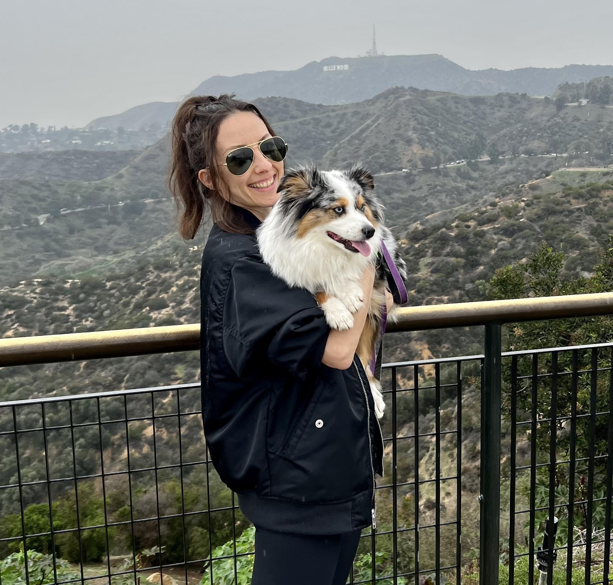

Welcome to My Sewing Portfolio
Place where I'm sharing my sewing journey.
About Me
About Me
Hello! I'm Lera, a passionate sewist with a love for creating custom garments and exploring new techniques. My journey started with a simple sewing machine, and now I’m bringing my ideas to life with fabric, thread, and creativity.
I specialize in creating beautiful, wearable pieces like dresses, skirts, and accessories, each made with care and attention to detail. Join me as I share my creative process and sewing adventures!
Frequently Asked Questions
Hover over the cards to see the answersWhat inspires me?
I'm inspired by art, nature, and everything around me. I love exploring new patterns, fabrics, and learning new techniques!
What fabrics do I love to work with?
I love working with natural fabrics like cotton and linen, especially when creating lightweight summer pieces.
What's my favorite sewing project so far?
My favorite project has been cargo pants. It was a challenging but rewarding experience! It definitely stretched and challenged my beginner sewist skills!